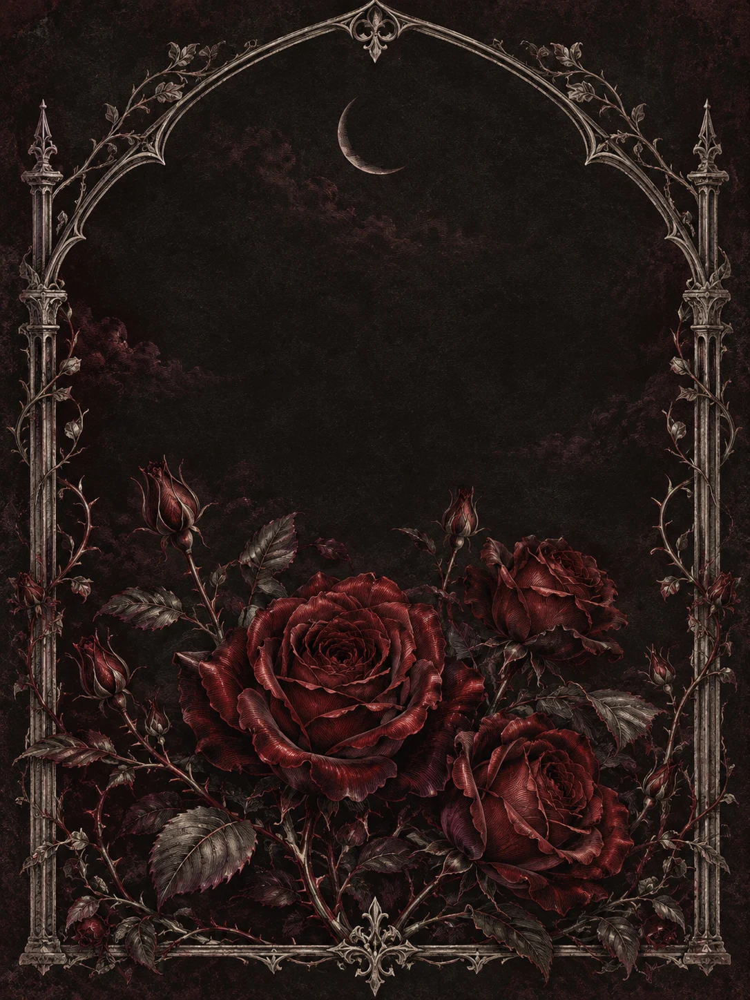

✦ CAPÍTULO I · O NOSSO COMEÇO
Há encontros
que mudam
todo o universo.
O meu tem uma data.
E tem você.
Para minha mulher, com tudo o que sou.

O TEMPO DESDE QUE ENCONTREI VOCÊ
e ainda é só o começo.
TEM COISAS QUE O CORAÇÃO ESCREVE MELHOR
Minha mulher,
E na vida… você é minha mulher.
CAPÍTULO II · NOSSAS MEMÓRIAS
O que o tempo
não pode levar.
O seu sorriso. O meu olhar.
As pequenas coisas que viram nós.
CAPÍTULO III · SE O AMOR TIVESSE SOM
A nossa trilha.
Algumas músicas dizem
o que eu queria te dizer.
PARA OUVIR COM VOCÊ
A nossa primeira faixa
Tem um lugar reservado para ela.
As nossas músicas chegam aqui em breve.
Se eu pudesse te dedicar um som,
seria aquele que me faz lembrar de você.
CAPÍTULO IV · UM POUQUINHO SOBRE MIM
Três segredos.
Uma surpresa.
Cada descoberta guarda um presente.
Encontre os três. Depois, procure a porta.
Pode tentar quantas vezes quiser. Eu gosto de te ver descobrindo.
CAPÍTULO V · O QUE EU AINDA NÃO TE DISSE
A porta fechada.
Há algo aqui que é só seu.
Três pequenos presentes guardam a entrada.
0 DE 3 ITENS ENCONTRADOS